gen-plan-page.py 훅이 docs/plan/ 소스에서 재생성한다(손편집 아님).docs/operating-criteria.md, codex 교차 벤더 검증 v2), 실행 계획 로그를 손편집이 아니라 파이프라인 훅(gen-plan-page.py)으로 재생성한다. 아래 §4W.1 루프 로그와 운영 기준은 접었다 펼 수 있다.docs/operating-criteria.md| 티어 | 이름 | 지키는 것 | 어기면 |
|---|---|---|---|
| T0 | 안전·불가역 | 비밀 비유출·private·비사칭·나가는/파괴적 작업 사전 확인 | 실세계 피해(되돌릴 수 없음) |
| T1 | 진실·무결성 | 검증 안 한 걸 주장 안 함·인용 증거 실열람+최신성·이미지는 교차 벤더 게이트·있는 그대로 보고·peer 커밋≠승인 | 공유 기록 오염(심사·협업 신뢰 붕괴) |
| T2 | 범위(사용자 의도) | 요청받은 것만·평가와 변경 구분·저울질 말고 추천 | 안 시킨 걸 함 / 요청과 다른 걸 함 |
| T3 | 불변식·HARD·선행조건 | 예산 200k/24재질·결정성·테스트·컴파일 + 도메인 HARD(InPlay 클리어·스폰/콜리전·R_support) + 선행조건 순서 + 수용 프로토콜 | 산출물 재현·검증 불가·불변식 파손 |
| T4 | 목표품질·경제 | (blocker 통과 후) SOFT 5축·§4W.1로 목표 충실 + 최소로(위임·병렬·간결) | 맞지만 덜 좋음 / 낭비(비게이팅) |
docs/plan/looplog.jsonl, append-only)| # | 시각 | 지질정합성 | 재질구역 | 물신뢰성 | 접지 | 무아티팩트 | 기능구역 | 다음 우선/액션 |
|---|---|---|---|---|---|---|---|---|
| 1 | 2026-08-16 02:40 | PARTIAL | PARTIAL | PARTIAL | MET | PARTIAL | FAIL | 기능구역 · 성벽 사각형 깨고 수변 게이트+부두+창고를 물에 정렬 |
| 2 | 2026-08-16 02:55 | PARTIAL | PARTIAL | PARTIAL | MET | PARTIAL | PARTIAL | 물신뢰성 · 수변 게이트+부두 편입으로 기능구역 FAIL→PARTIAL. 다음: 연속적 물가·번짐 제거·부두를 수면 위 기둥 데크로 |
| 3 | 2026-08-16 03:05 | PARTIAL | PARTIAL | PARTIAL→개선 | MET | PARTIAL | PARTIAL | (재검증) · 물을 의도 강·호수로 한정(번짐 제거)+부두 수면 위로 |
| 4 | 2026-08-16 03:20 | PARTIAL | PARTIAL | MET | MET | PARTIAL | MET | 재질구역 · 물신뢰성·기능구역 MET 확정(3 MET). 도심 내부가 균일 평탄 pad → 흙/자갈 변주 주입 |
| 5 | 2026-08-16 03:30 | PARTIAL | PARTIAL | MET | MET | PARTIAL | MET | 재질구역 · 내부 지면 변주 넣음. 남은 원인=중앙 spine이 단색 연보라 직사각형 → 도로를 정점색 자갈 그리드로 |
| 6 | 2026-08-16 03:40 | PARTIAL | PARTIAL | MET | MET | PARTIAL | MET | 무아티팩트 · 도로 자갈 그리드로 부감 도로/지면 분리됨. 도로가 아직 깔끔한 직사각형 → 폭 불규칙화+대비 강화 |
| 7 | 2026-08-16 03:50 | PARTIAL | PARTIAL | MET | MET | PARTIAL | MET | 조명/텍스처 레버 · 도로 불규칙화. codex 판정: 정점색 조명 천장 도달(추가 정점 튜닝은 diminishing). 남은 레버: 텍스처 베이크·앰비언트·지형 apron |
| 8 | 2026-08-16 04:10 | PARTIAL→개선 | PARTIAL | MET | MET | PARTIAL | MET | 지질정합성 · 앰비언트 레버 테스트→지면이 직접광 지배라 미미, 되돌림(크러시 방지). 지형 apron: 도심→산 전이를 24m 산기슭 스커트로 넓힘. 재질/아티팩트는 텍스처 발주(R25)에 의존 |
| 9 | 2026-08-16 04:20 | PARTIAL | PARTIAL | MET | MET | PARTIAL | MET | (텍스처 대기) · 지질: 스커트로 좌/전면 완만. 재질·무아티팩트는 R25 텍스처 도착 후 재개(정점색 천장) |
| 10 | 2026-08-16 14:30 | PARTIAL | PARTIAL↑ | MET | MET | PARTIAL↑ | MET | wood 재베이크/도로 · R25 텍스처 배선(팔레트 3+지면 디테일, wood는 게이트 REVISE). 지면 자갈·석벽 돌 결로 정점색 천장 돌파 |
| 11 | 2026-08-16 15:00 | PARTIAL | MET | MET | MET | PARTIAL | MET | 무아티팩트 · wood 무옹이 최종본(R25f) 게이트 PASS→배선(4/4). 전 표면 텍스처로 재질구역 PARTIAL→MET(4/6 MET). 잔여=도로 직사각형+지면 타일 반복(눈높이) |
| 12 | 2026-08-16 15:10 | PARTIAL | MET | MET | MET | PARTIAL | MET | 무아티팩트 · 같은 타일 2옥타브는 특징 상관돼 비트 잔존(3070 25g 지적). 독립 2번째 타일 필요 |
| 13 | 2026-08-16 15:30 | PARTIAL | MET | MET | MET | MET* | MET | 무아티팩트 도로형상 · 독립 2타일로 지면 타일 비트 제거(무아티팩트 지면부 MET). 잔여=도로 strip 형상 |
| 14 | 2026-08-16 16:00 | PARTIAL | MET | MET | MET | MET | MET | 지질정합성 · 도로 사행 재설계로 무아티팩트 MET(5/6). 지질=애추 사면 배선이 다음 |
| 15 | 2026-08-16 16:40 | MET | MET | MET | MET | MET | MET | — 루프 수렴(6/6 MET) — · 3070 scree_apron·cliff_buttress(R25i-j)를 DressScree로 급사면 기부에 배선(애추 치마+수직 스퍼) → 벽 같은 접촉 해소, 침식된 지형으로 읽힘. 지질정합성 PARTIAL→MET. 6기준 전부 MET. §4W.1 정련 루프 15회 만에 완전 수렴. |
docs/plan/loopb.jsonl(append-only).| 왕국 | 산포 | 가시부유 | 최대부유 | 접촉 | 판정 |
|---|---|---|---|---|---|
| oathbound-keep | 178 | 0 | 0.00m | 0.41 | MET |
| beacon-marches pillar_broken(float 0.64m, 접촉 1/5); props_cluster(float 0.50m, 접촉 1/5) | 195 | 2 | 0.64m | 0.48 | PARTIAL |
| archive-meridian dead_tree(float 0.64m, 접촉 0/5) | 162 | 1 | 0.64m | 0.42 | PARTIAL |
| cognition-spire pillar_broken(float 1.58m, 접촉 0/5) | 179 | 1 | 1.58m | 0.45 | PARTIAL |
| patentnet-citadel | 149 | 0 | 0.00m | 0.56 | MET |
| Finale | 15 | 0 | 0.00m | 1.00 | MET |
논문 Stage 1은 열린 텍스트를 구조화된 장면 명세로 번역한다(원샷 — 루프 없음). 산출물: docs/spec/stage1_intent.md + gen_realm_specs.py의 INTENT/WATER 테이블 → 스펙 v3의 intent/world.water. 물(강/호수/오아시스/운하/산정호)을 1급 지형 범주로 포함, 스펙 재생성·분할 불변식 통과.
거친 지형 생성→산포→렌더-검사-수정 루프(§4W.1 = 논문 Stage 2.3). 지질 구조(크레스트·지맥·배수) + 수력 침식 베이크(MIT 알고리즘 각색) + 물 절개·수면 평면. 에셋은 3070 Blender 프로시저럴 킷(48종). §4W.1 정련 루프 15회로 6기준 전부 MET(아래 로그).
기능이 다른 구역(광장·주거·보급·수변 어촌·성소)으로 나눠 물·경사를 인지해 배치. 구역별 근접 렌더 → 자세·스케일·충돌을 codex 적대 리뷰로 점검·수정. 텍스처 베이크·애추 사면·도로 사행·수변 게이트 반영.
논문 Stage 3의 render-inspect-refine 루프에 대응하는 기계 측정. `AuditContact`가 접지 산포마다 지형 MeshCollider에 5샘플 레이캐스트로 부유를 실측(§4W.1 codex 시각 루프의 대칭). 아래 실행 로그가 이 스텝의 인사이트 저널이다 — 진단·수정·측정 정직성이 라운드로 쌓인다.
s5-realms 컷신이 제시한 왕국별 시그니처를 실제 플레이 씬의 far-core 히어로 랜드마크로 저작·배선했다. 각 조각은 절차적 손저작(라이선스 방화벽 — H3 생성물을 메시로 추적하지 않는다), 재질 3종 재활용(신규 0), PIECES 끝 append(§4.7). 배선은 무조건 실행되는 DressRealmSignature(스펙 구동이라 DressKeep 등 스위치는 죽은 코드), 배경 스파이어는 축 밖으로 비켜 실루엣 정리. 게이트 2단: codex 킷셰이프(장르 실루엣이 먼저 읽히나 — 오벨리스크 vs 크리스탈 등) + codex 인게임 컴포지션(Loop A). ValidateScenes 8씬 전부 예산 통과(최고 patentnet 196,703/200k).
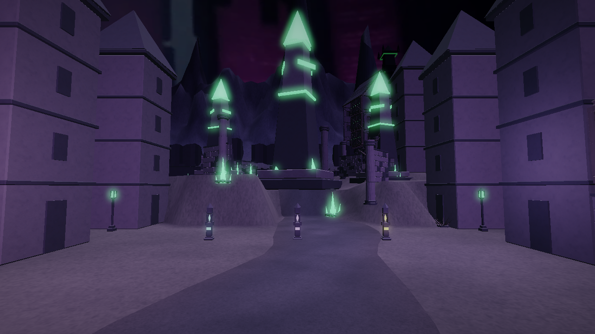
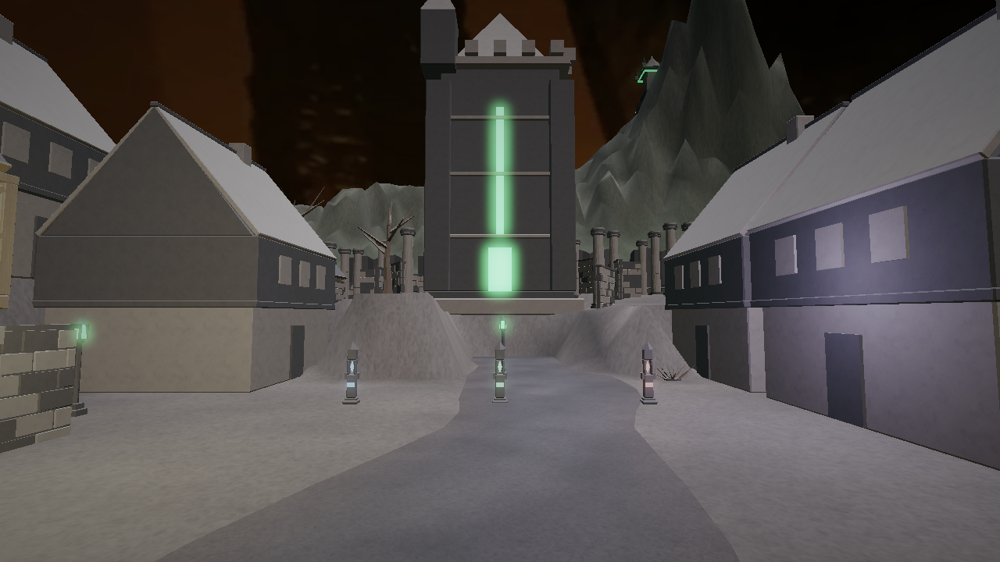
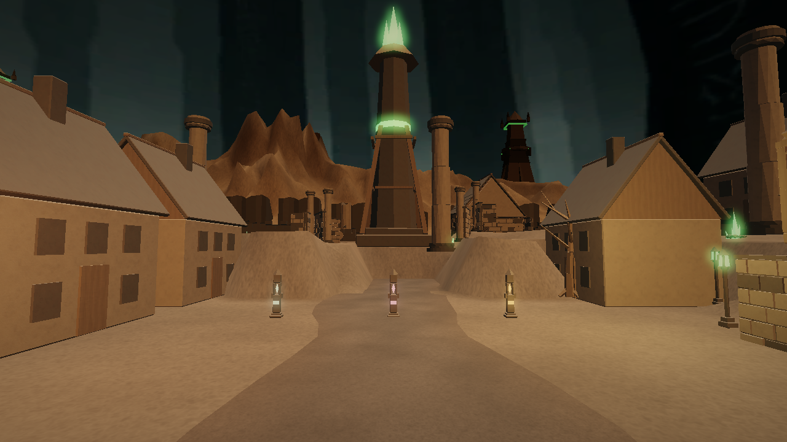
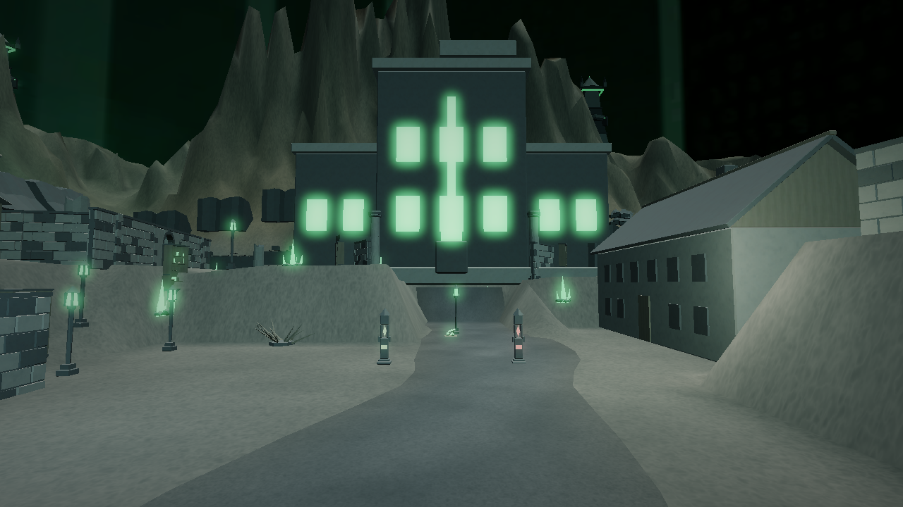
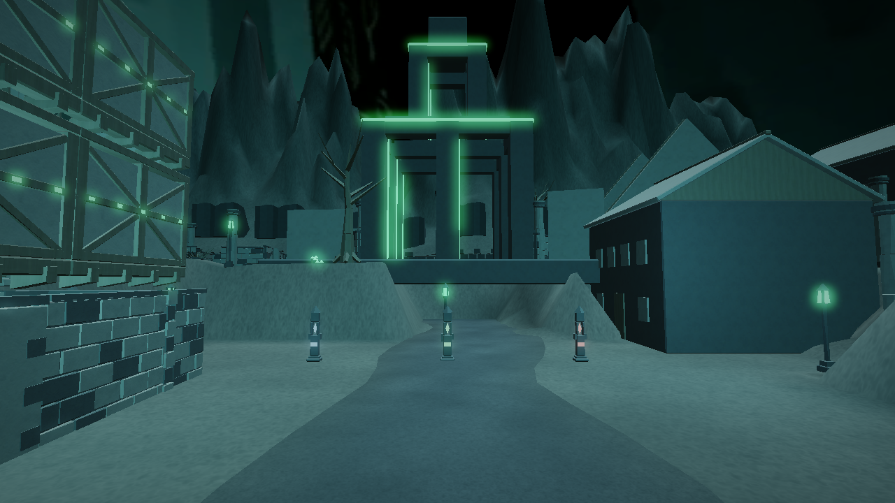
컷신(비실시간 뉴럴 렌더)의 무드를 실시간 WebGL(Built-in RP)로 끌어올렸다 — 트라이·재질 불변, 라이선스 방화벽 유지(생성물은 런타임에 들어가지 않는다). 셰이더 2종을 카메라에 얹었다: RealmBloom(선택적 발광 블룸 — corrupt_glow를 HDR 애시드 그린으로 올려 독성 아우라로 번짐) + RealmColorGrading(ACES 톤맵 + lift/gamma/gain + 채도/웜틴트 + 비네트). 앰비언트·스카이 노출을 낮춰 그림자를 검게, 글로우가 빛을 나른다. 왕국별 노출/웜/블룸로 각 팔레트 정체성 유지. codex before/after 게이트: cognition·beacon·patentnet SHIP, oathbound·archive는 지시대로 1패스 보정 후 SHIP. WebGL 빌드 스트립 방지로 두 셰이더를 always-included 등록. 이후 컨테이너 재빌드→/healthz ok, 최신 web.wasm.br/web.data.br 라이브 서빙 확인.
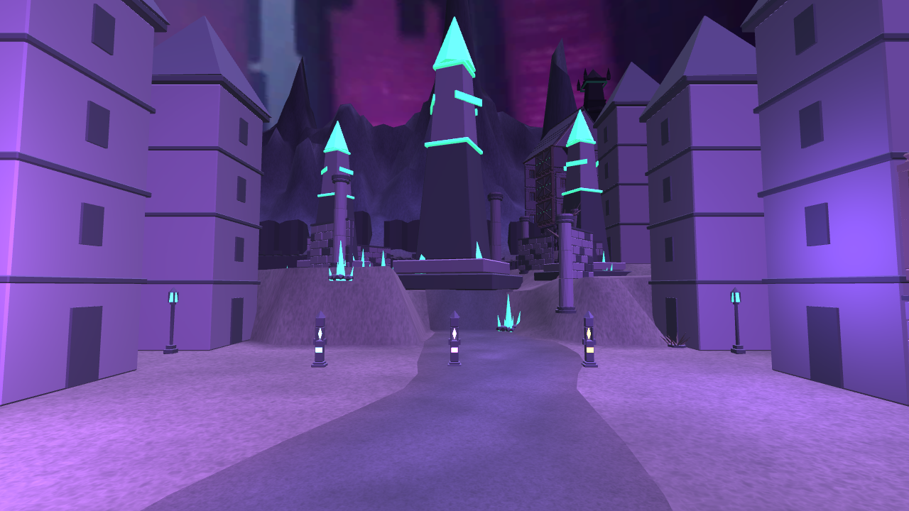
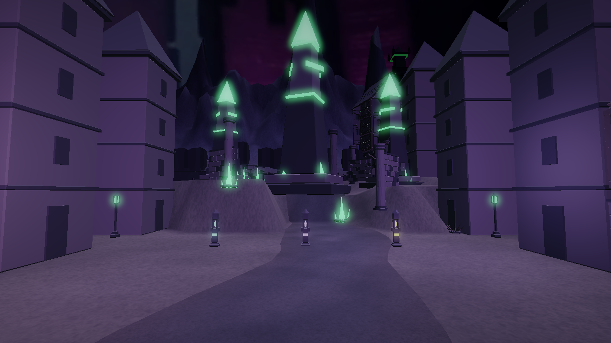
표면 질감(오너 지적 반영 — '발광만 좋아졌다'). 킷 GLB엔 UV가 없어 표준 텍스처 불가 → 월드공간 트라이플래너 셰이더로 UV 없이 seamless 스톤/우드 그레인 + 약한 노멀(포인트라이트 릴리프). 타일 민=팔레트색이라 평균 룩 불변, 디테일만 추가. codex 질감 게이트 SHIP.
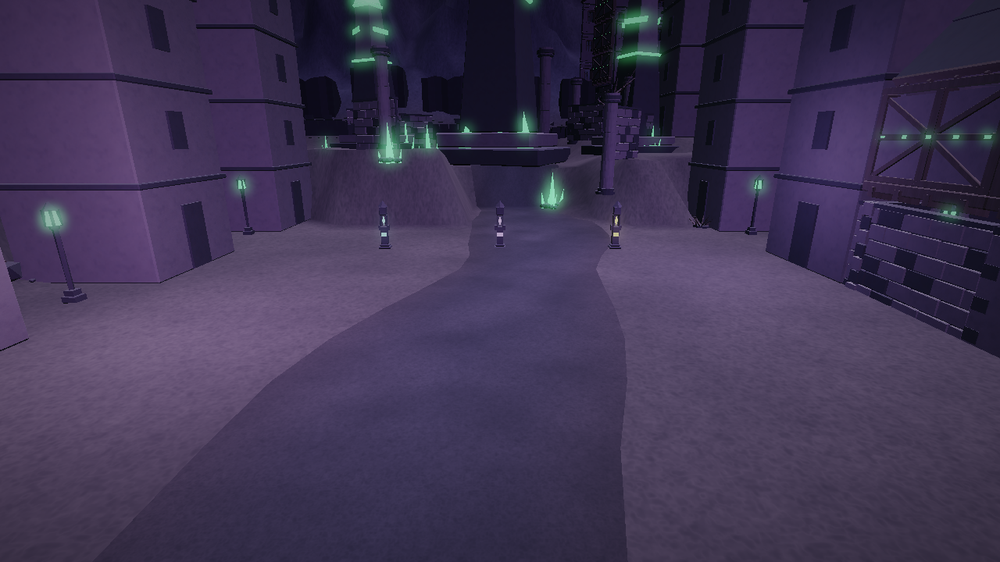
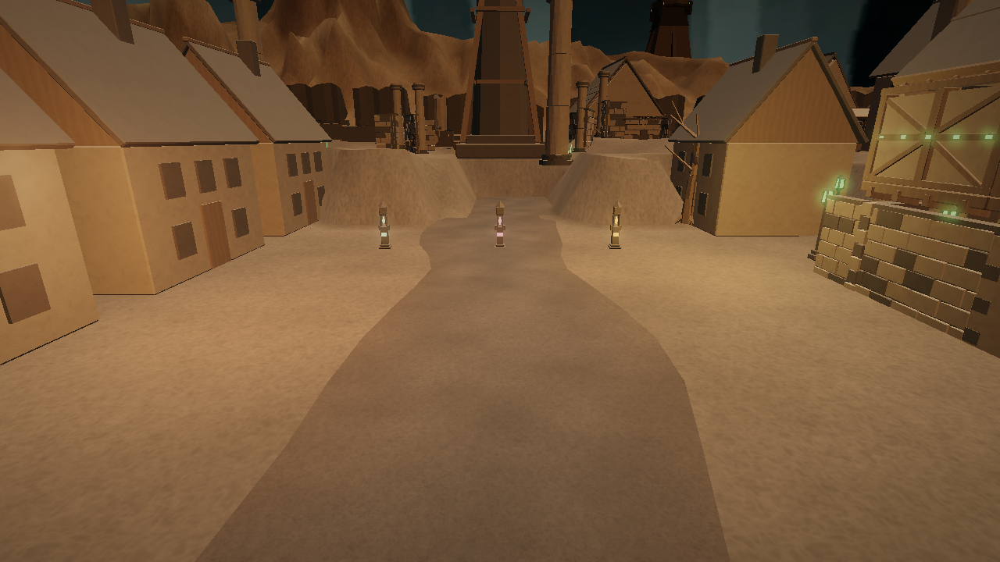
Unity Web 배치 빌드(dist/web/) · 서버(server/ TS, 55 pass·protocol 19/19) · Docker 컨테이너 검증: 이미지 오프라인 빌드 → 20초 내 healthy → /healthz={"ok":true,...} → 정적 서빙(wasm br). 증거 docs/evidence/docker-integration.md.
Playwright Chromium 허브 프록시 경유 4클라 매치 완주·유일 승자·서버 권위 리더보드 4건·봇 인계·허브 다운 복원력(four-client.mjs), 2클라 vertical-slice.mjs(전송 예산 ≤25/45MB) 모두 GATE PASS. PvPvE 승자 결정 요구의 실증.
남은 것은 코드가 아니라 오너 입력이다: ①라이브 KIPlay 허브 저장소에 games.json+compose 서비스 커밋(소유자 검토, 편집안 작성됨) ②GCP Compute Engine 배포(프로젝트ID·자격 외부 입력) ③제출 마감 일시 확인(동결일 08-26). F1~F4 중 카메라 벽 뚫림은 기하 1차 판정 완료(도로 중심 안전, 주택 플랭크만 리스크). 프리즈는 ①②③ 후.
CWM 논문(docs/papers/code-world-model.md) §7 결정 A 채택: 게임이라 불릴 수준의 프레젠테이션을 비실시간 생성 영상으로. 방화벽: 생성 영상은 컷신·트레일러 전용, 게임 런타임은 H3 미호출, 출하 에셋은 절차적 유지(docs/cutscenes/pipeline.md). 교차 벤더 — Grok(창작)·GPT/opencodex(기술)·MiniMax-H3 로컬(렌더)·codex(판정). 아래 로그가 컷신 라운드 저널.
컷신 #1 — 오피스→왕국 전환 (codex 게이트 SHIP, 3라운드 수렴): 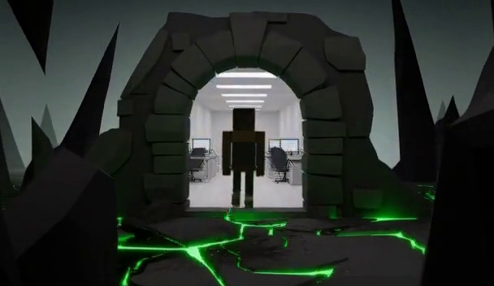
▶ 영상 재생 — 저폴리 다크 스톤 문턱, 아치 너머 오피스, 부패 녹색광이 바닥 균열에 클링. Grok→GPT→H3→codex.
배치 하네스(batch_render.py, ComfyUI 1회 기동)로 5왕국을 연속 렌더, codex가 왕국별 시그니처·스타일을 판정. archive·cognition 즉시 SHIP, oathbound·beacon·patentnet은 1트윅 재렌더 후 SHIP(beacon 꼭대기 녹색→주황 불꽃 교정 등). 왕국별 구별 뚜렷.
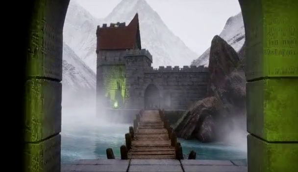
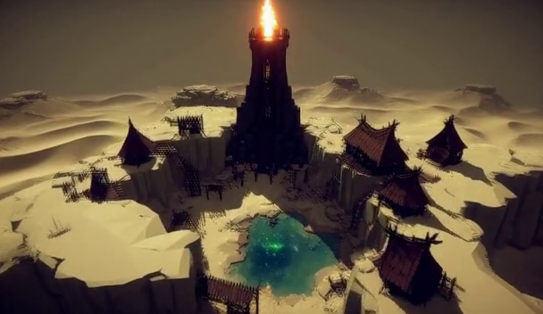
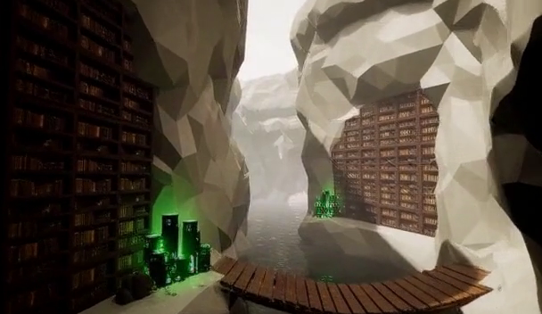
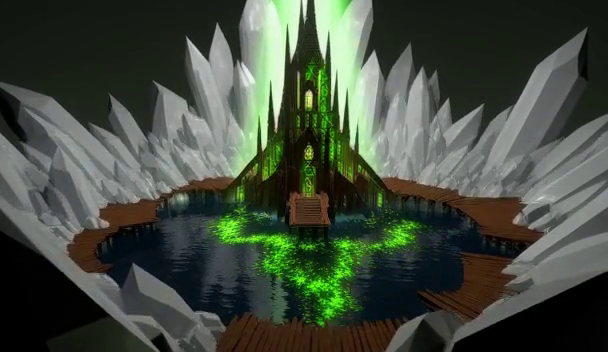
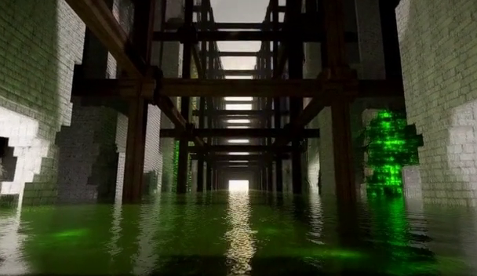
docs/plan/steplog.jsonl(append-only)에서 온다.